Indigenous sustainability
Knowledge, seeds and ways of life that kept people and land going for generations.
Where this module is going
- Describe Indigenous knowledge and traditional ecological knowledge, and what they teach us about living with nature.
- Explain how people make decisions about the environment, and why those choices are not always rational.
- Describe how rules, rights and institutions shape who uses natural resources, and how.
- Explain how policy and governance can move a community or a country toward sustainability.
- InQuizitive 18, 19 and 20
- Quiz: Indigenous Sustainability
- Review Exercise 3: Systems Analysis for Sustainability
Reading for today: Nelson (2017)
Due dates and submission links are on the course site.
Key terms for today
What share of the world's biodiversity do Indigenous Peoples protect on their lands?
Today's big ideas
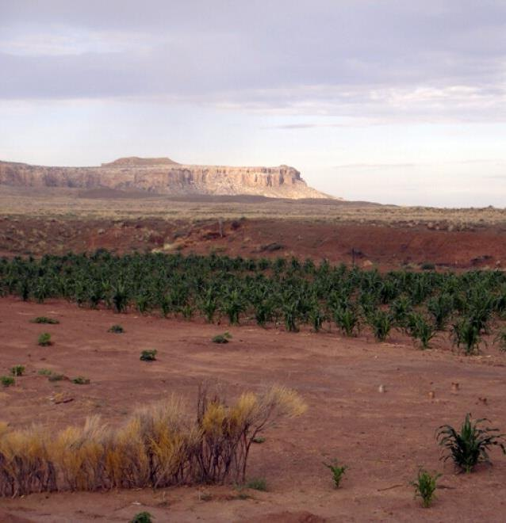
1 · Traditional ecological knowledgeWhat do people learn from living in one place for generations?
A deep knowledge of plants, animals and land, handed down over generations.
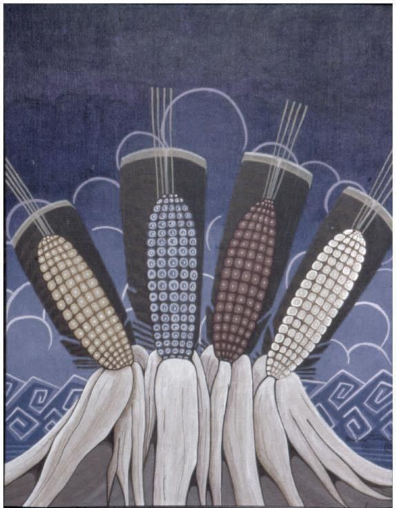
2 · Lessons of Indigenous practicesHow do farmers grow food in a dry, changing climate?
Hopi dryland farming keeps many kinds of corn, so some crops survive when the weather turns.
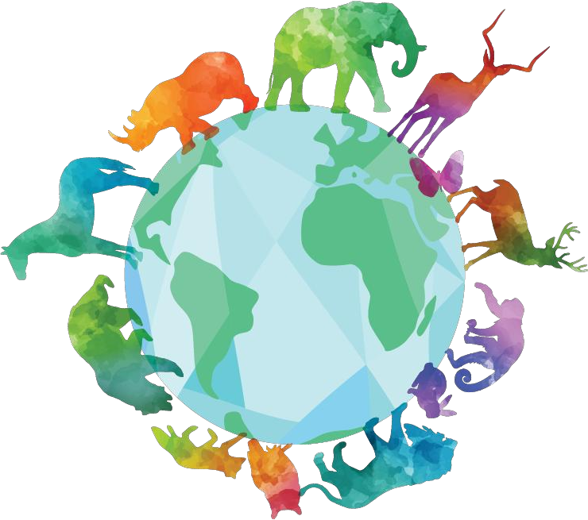
3 · Knowledge and educationWhy does Indigenous knowledge matter for the planet?
Indigenous Peoples protect about 80% of global biodiversity, and their ways of learning treat people and nature as connected.
Enter today's code
Your instructor shows a code on screen at the start of class. Checking in counts toward your participation grade.
Which word means giving each person what they need to reach a fair outcome?
The Colorado Plateau
Most Indigenous peoples have used nature-based solutions to survive
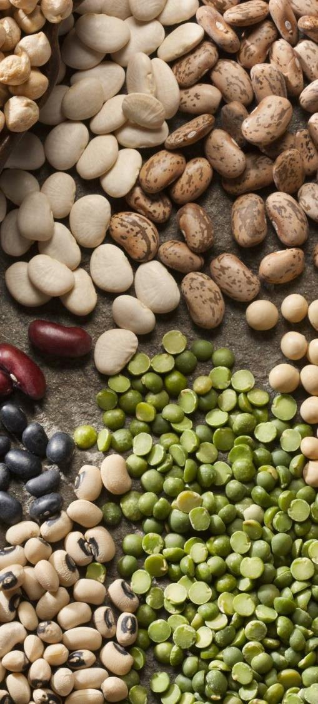
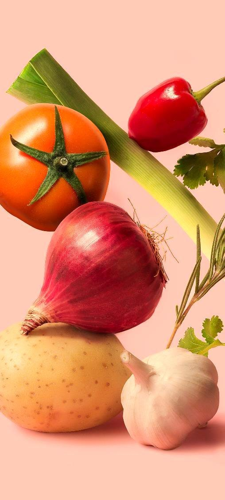
People living at the edges of power often hold deep, tested knowledge. Today we listen to some of it.
Traditional ecological knowledge and Western science
Built over many generations of living in one place. It sees plants, animals, land, people and spirit as one connected whole. It is passed on through stories, practice and ceremony.
Built by testing ideas with experiments and measurements. It often studies one part of a system at a time, and writes results in papers and data.
Teaching summary. The two ways of knowing are different, and they can work side by side.
Hopi farmers grow corn on 6 to 10 inches of rain a year.
About 80% of global biodiversity is on lands managed by Indigenous Peoples (IPBES 2018).
Quick question: why trust knowledge that is not written in a science journal?
Tap to check.
Because it is tested every day for generations. If a practice failed, people would not survive and would not pass it on.
Indigenous practices that support sustainability
Read the Washington Post article in Module 7 (recommended) before you choose.
Hopi corn
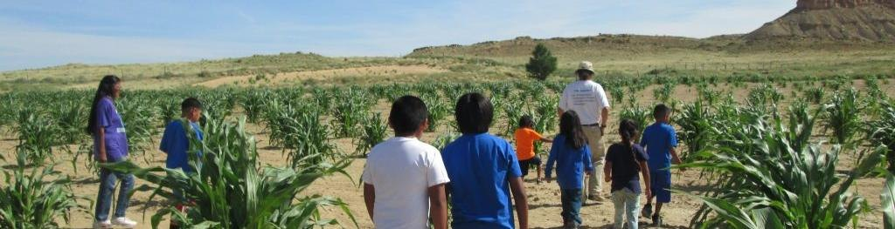
- Knowledge and a huge variety of corn, rich in genetic biodiversity
- A way of life that follows the natural cycle
- The Hopi agricultural calendar, tied to snow and rain
- Place-based adaptive management
- Plant spacing and depth set by the environment
- Drought-tolerant plants
For Hopi people, corn is the central bond
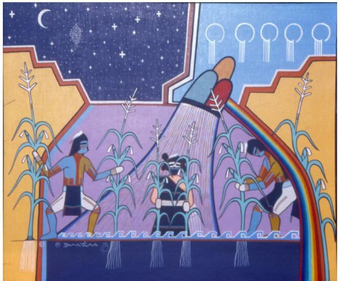
Paintings by Dawakema (Milland Lomakema), acrylic. Courtesy of Artist Hopid, Second Mesa, Arizona (Glenn 2008, Exemplary Arts: Corn as Life Essence).
What type of social organization do Hopi people practice?
One variety or many?
Field A · one variety
12 of 12 plants
Field B · four varieties
12 of 12 plants
Teaching numbers, not real crop data. Hopi farmers keep many corn varieties for this reason.
The sameness
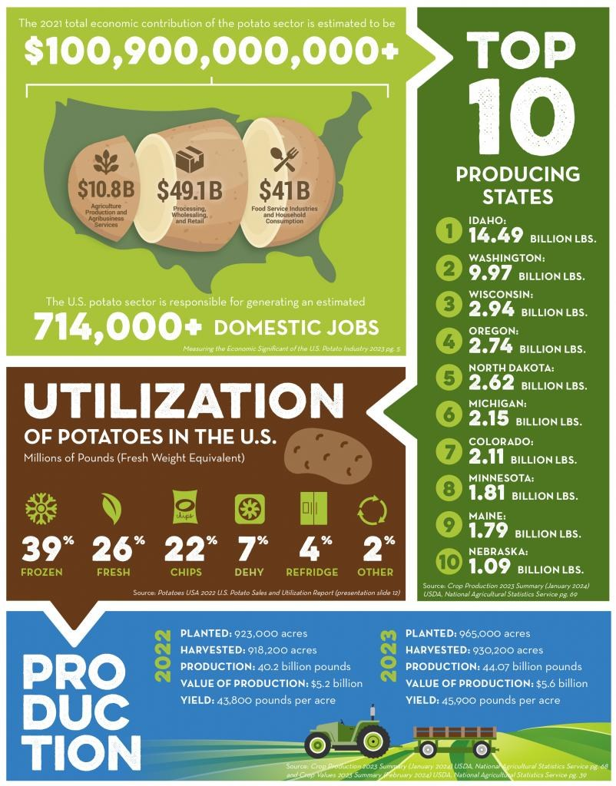
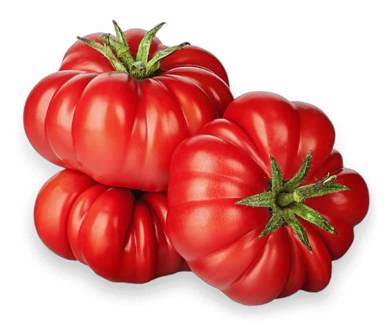
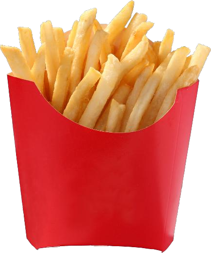
When every plant is the same, one disease or one bad season can take them all.
Pachamama, the Earth Mother
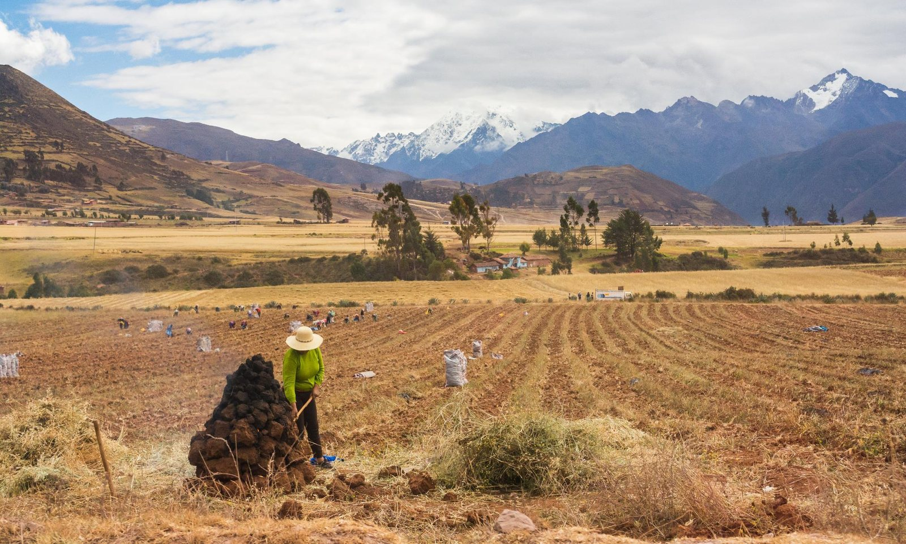
Climate change has directly hurt Andean potatoes, and local people are actively adapting by developing new varieties.
Biodiversity and Indigenous Peoples
Source: IPBES (2018).
Nelson (2018): Eighth Fire
Holistic and interdependent learning based on three key elements.
Learning spirits
Embodied learning
Symbiotic and contextual learning
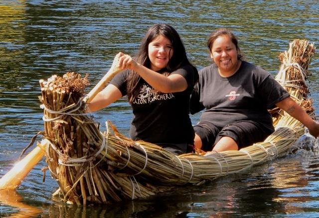
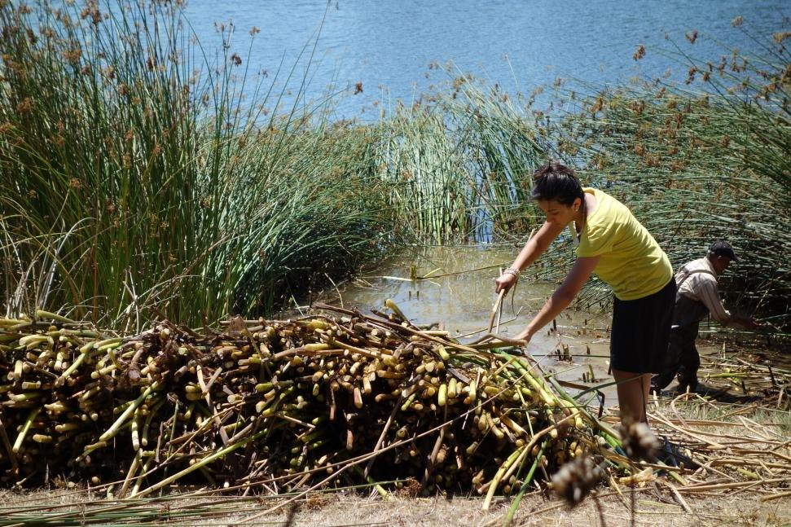
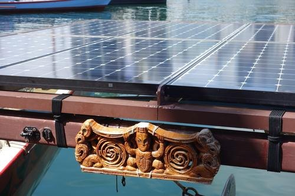
Photos courtesy of The Cultural Conservancy, nativeland.org/guardians-of-the-waters.
Indigenous sustainability is called sustainability with a small “s”. What does that mean?
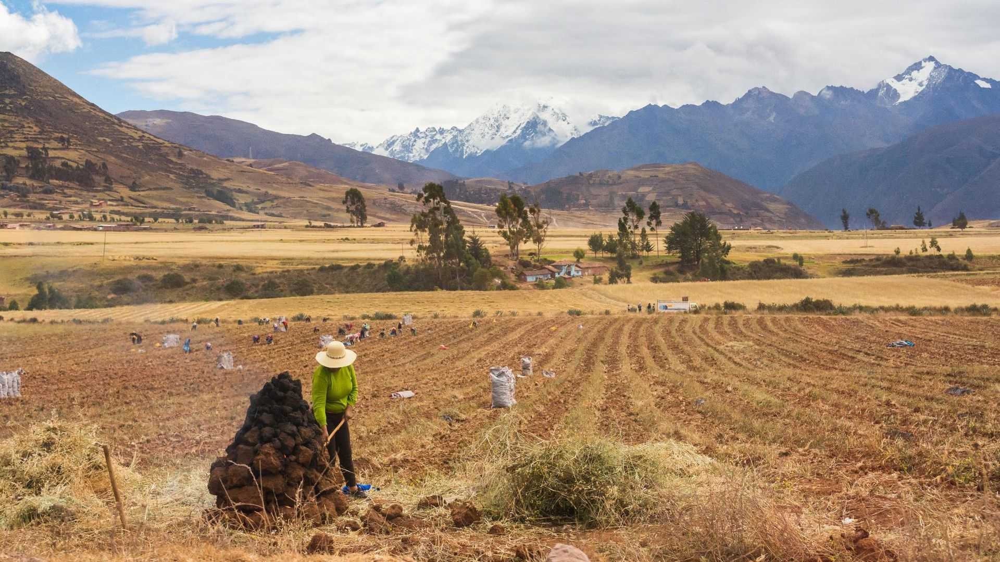
Sustainability grows from many ways of knowing.
- Many Indigenous peoples have been pushed off their lands and pushed to the margins.
- Indigenous sustainability is sustainability with a small “s”. It does not claim that one set of knowledge is better.
- Many practices are survival and a deep belief system, where hope and faith go on whatever the circumstances.
- Many of these practices are crucial for global biodiversity.
- These practices are also acts of resistance and persistence.